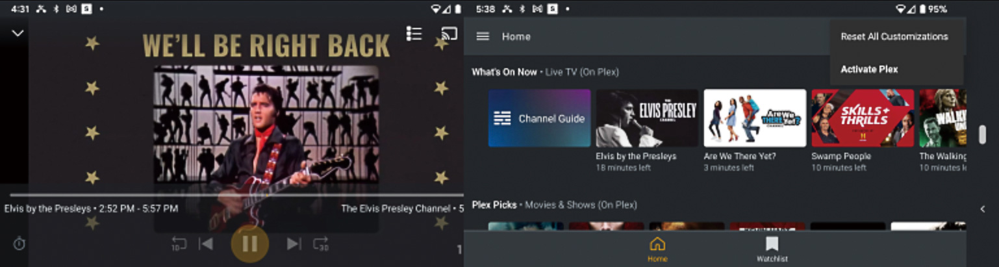

트렌드 리포트

Trend ReportFAST, 커넥티드 TV 시대의
새로운 유망주로 부상
-
FAST(Free Ad-Supported TV) 서비스가 커넥티드TV(Conneted TV, CTV) 시대의 다양한 장점을 구현하면서도 선형TV의 시청 경험을 그대로 계승할 수 있다는 점에서 향후 큰 발전을 이룰 것이라는 기대가 커지고 있다. 광고를 보는 대가로 실시간 TV 채널이나 VOD를 무료로 볼 수 있는 FAST 서비스는 최근 다양한 사업자들이 활약하며 광고 시장에서도 주목을 받는 등 괄목할만한 성장세를 기록하고 있다. FAST 채널을 통해 새로운 방식으로 시청자와 소통하고 일반적인 SVOD 모델을 탈피한 새로운 수익 방법을 찾을 수 있을지 귀추가 주목된다.
-
1들어가며스트리밍 시장에서 전통적인 선형 TV 포맷의 부활이 새로운 트렌드로 부상하며 FAST(Free Ad-Supported Streaming TV)에 대한 관심도 커지고 있다. ‘광고 기반 무료 콘텐츠 스트리밍 TV’이라는 의미의 FAST는 디지털 플랫폼에서 광고를 보는 대신에 무료로 볼 수 있는 실시간 채널 서비스로, 광고 기반 주문형비디오(AVOD)와 TV 실시간 채널이 결합된 개념이다 1.
스트리밍 서비스의 초창기에는 주문형 비디오(VOD) 방식이 지배적이었다면 최근에는 스트리밍 플랫폼에서도 전통적인 선형 TV의 경험을 복제하는 방식이 주목받고 있다. 시청자들은 좀 더 다양한 콘텐츠를 구독료 없이 편리하게 이용할 수 있고, 서비스 사업자는 콘텐츠 라이브러리 활용도를 높이는 효과적인 방안이 될 수 있기 때문이다.
이러한 관심은 구체적인 실적으로도 뒷받침되고 있다. 2014년 초 출시되어 미국에서 1,600만 MAU(Monthly Active Users, 월간활성사용자)에 도달하는 데 6년이 걸렸던 플루토TV(Pluto TV)가 지난 2년 동안 MAU를 거의 두 배로 늘리는 성과를 달성한 것이 대표적인 사례이다. 플루토TV 외에도 수모(Xumo)와 로쿠 채널(Roku Channel)을 비롯한 여타 FAST 서비스들 역시 주목할 만한 성장세를 이어가고 있다.
FAST 서비스 기능은 이제 모든 주요 스마트 TV 제조업체에 내장되어 있으며, 로쿠(Roku), 아마존 파이어 TV(Amazon Fire TV), 티보 4K 스트림(TiVo 4K Stream) 같은 커넥티드TV(CTV)용 디바이스 제조업체를 통해서도 FAST 앱을 이용할 수 있다.
이와 관련, 본 고에서는 FAST의 인기 요인과 급성장 배경을 검토하고 주요 FAST 사업자의 동향과 이슈를 검토하기로 한다.- 출처: [ICT 시사용어]FAST 플랫폼, 전자신문, 2021.10.21.
-
2FAST의 인기 요인과 급성장 배경FAST에 대한 관심과 인기가 높아지는 이유를 시청자의 입장과 서비스 공급자의 입장으로 각각 나누어 살펴 보도록 하자.
2.1.시청자가 누리는 혜택
결론부터 말하자면, 시청자 입장에서는 FAST를 통해 선형TV의 편안한 시청 경험을 얻을 수 있고 구독료 부담도 줄일 수 있다는 점이 혜택으로 꼽힌다. 먼저, FAST 플랫폼의 라이브 TV 서비스는 중단 없이 영상을 시청할 수 있는 편안한 경험을 제공한다. 그 이유는 FAST 서비스는 연중무휴 선형 방송을 제공하므로, 같은 광고 기반 서비스라도 시청자 입장에서 볼 때 AVOD2 서비스보다 전통적인 TV 방송에 훨씬 더 가깝게 느낄 수 있기 때문이다.3 지난 수 십 년 동안 전통적인 TV 서비스 시청방식에 익숙해져 있는 시청자들이 FAST 플랫폼에 큰 거리감을 느끼지 않고 있는 것이다.- 자신이 좋아하는 콘텐츠의 새로운 시즌이 공개되었거나, 구독료 무료 혹은 할인을 받거나, 보고 싶은 콘텐츠가 타 SVOD 서비스에서 옮겨오는 경우 주로 가입하는 것으로 확인(출처: Deloitte , 2022)
- FAST 플랫폼 상의 채널들은 일반적으로 주문형 비디오(VOD) 자산의 재생 목록을 사용하여 생성되기 때문에 진정한 선형TV라기보다는 가상 선형(Virtual Linear)TV에 가깝다. 그럼에도 불구하고, 시청자에게 전통적인 ‘라이브’ TV처럼 보이는 채널을 제공할 수 있다는 것은 시청자의 경험 측면에서 유리한 요소이다.
FAST에 대한 시청자의 관심을 유도하는 또 다른 요인은 서비스가 ‘무료’로 제공된다는 점이다. 매달 케이블 TV 요금이나 SVOD 서비스 구독료를 지불하는 것과 비교해볼 때, 무료로 제공되는 FAST 서비스는 비용에 점점 더 민감해지는 시청자들에게 아주 매력적인 선택지가 될 수 있다. FAST 서비스에서 접할 수 있는 콘텐츠의 분량과 다양성이 증대되고 있는 만큼 이러한 혜택을 누리면서 무료로 선형TV의 경험을 할 수 있는 FAST에 대한 관심이 높아지는 것은 당연한 결과라고 할 수 있다.
이처럼 익숙한 TV 시청 방식을 제공하는 무료 서비스라는 점 외에도 전통적인 유료 TV 서비스와 같이 다양한 콘텐츠를 포괄적으로 제공하는 FAST 플랫폼의 콘텐츠 라인업 방식 역시 장점으로 꼽힌다. 시청자들로 하여금 광범위한 TV 채널을 넘나들며 다양한 콘텐츠를 섭렵할 수 있게하기 때문이다. 이에 따라 이미 수백만 명의 시청자들이 이미 수백 개의 무료 시청 채널을 지원하는 FAST 서비스를 기존의 유료 TV 서비스에 대한 실질적인 대안으로 받아들일 것이라는 기대도 커지고 있다.2.2.서비스 공급자의 기회
서비스 공급자의 입장에서도 FAST는 중요한 비즈니스 기회를 제공할 수 있다. FAST 채널을 통해 기존 콘텐츠 라이브러리의 활용도를 높이고, 구독자 이탈 추세를 진정시키며, 광고 비즈니스 기회를 확장할 수 있기 때문이다.
우선, FAST는 기존 콘텐츠 라이브러리의 활용 기회를 높이고 구독자 이탈을 막데 도움을 준다. 주요 SVOD 서비스의 경우 검색 엔진 등을 통해 유입되는 시청자들은 기존의 콘텐츠 라이브러리가 아닌 새로운 오리지널 프로그램으로 유도되는 경우가 대부분이다. 따라서 시청자들은 해당 SVOD 서비스의 라이브러리 콘텐츠에 대해 아예 인식하지 못하거나 오리지널 콘텐츠에만 집중하는 경향이 두드러진다.
이는 시청자가 해당 SVOD 서비스 플랫폼에서 한 두 가지의 오리지널 시리즈를 시청한 다음 구독을 해지하는 요인이 될 수 있다. 해당 서비스에서 관심 있는 모든 것을 이미 소비했다고 판단하기 때문이다.이러한 방식은 결국 고질적인 가입자 이탈로 이어질 수 있다는 점에서 우려를 더한다.
반면 FAST 선형 채널을 활용할 경우, 시청자가 탐색할 수 있는 전체 라이브 섹션을 앱에 만들어 두고 다양한 콘텐츠를 제공할 수 있으므로 가입자 이탈 문제에 대한 해결책이 될 수 있다. 이처럼 선형 채널은 시청자가 콘텐츠 라이브러리를 깊이 탐색할 수 있도록 하는 것 뿐만 아니라 유명한 오리지널 시리즈 이외의 다양한 프로그램을 볼 수 있는 권한을 제공함으로써 시청자에게 구독료 비용을 정당화할 수 있는 구실이 될 수 있다. 그동안 스트리밍 시장의 주도권을 행사해온 SVOD 사업자들이 최근 FAST 채널 영역에 앞 다퉈 진출하고 있는 배경에는 이러한 이슈가 자리 잡고 있는 것으로 보인다.
더불어, 광고 비즈니스 기회를 확장하는 것도 FAST 도입의 중요한 동인이 되고 있다. 선형 채널은 더 많은 광고 슬롯을 확보할 수 있다는 점에서 광고 비즈니스 측면에서 유리하기 때문이다. SVOD와 FAST는 모두 기존의 지상파 방송 및 케이블TV 보다 광고 로드가 낮다. 특히 Netflix와 Disney+ 같은 SVOD 서비스는 오리지널 콘텐츠에 대한 광고가 프리롤 방식4으로만 제한적으로 가능한 상황이다.
이처럼 제한된 광고 슬롯을 보완하기 위해 선형 채널에 약간 더 높은 광고 로드를 도입하여 라이브러리 콘텐츠의 다양한 지점에 광고를 삽입한다면 서비스 및 전체 스트리밍에 대한 광고 인벤토리의 양을 늘릴 수 있다.- 동영상을 재생하기 이전에 광고를 삽입하는 방식
물론 선형 채널에서 오리지널 시리즈와 동일한 CPM5이 적용될 가능성은 높지 않다. 하지만, 캠페인을 효과적으로 만드는 데 필요한 광고 빈도를 적용하여 기존 채널에서 놓치고 있던 시청자에게 도달할 수 있는 방법을 제공할 수 있다면 광고주들로부터 높은 호응을 얻을 수 있을 것으로 기대된다.
특히 커넥티드TV(CTV) 환경에서는 광고가 이미 프로그래밍 방식으로 거래되고 있으며 고도의 시청자 타겟팅을 통해 제공되므로 광고를 게재하기에 훨씬 더 유리한 환경이 조성될 것으로 보인다. 콘텐츠 소유자는 FAST 채널을 사용하여 가장 유망한 플랫폼에 스트림을 직접 게시함으로써 일반적인 SVOD 모델과는 다른 광고 기반의 새로운 수익을 창출할 수 있을 것으로 보인다.
한편, FAST 채널의 인기가 높아지는 최근의 트렌드는 무료 라이브 채널을 제공하는 서비스와 자체 채널을 만들고 배포하려는 콘텐츠 저작권 보유자들로부터도 관심을 모으고 있다. FAST 플랫폼을 활용해 전통적인 방송 산업의 반경을 넘어 모든 단말과 서비스를 포괄해 콘텐츠를 제공하는 사업자로 도약할 수 있는 기회가 될 것이기 때문이다.
이는 콘텐츠 수요가 전례 없이 확대되고 있는 상황에서 연중무휴 선형 채널을 채워야 하는 FAST 서비스의 특성에서 기인한다. 일반적으로 채널 하나를 설정하는 데 약 100~300시간의 콘텐츠가 필요하고, 매월 전체 콘텐츠의 약 10-20%가 새로 업데이트되는 것이 권장되고 있다. 이처럼 콘텐츠 확보가 무엇보다도 중요한 상황에서 콘텐츠 파트너십의 중요성이 커지는 것은 두 말할 필요가 없으며 콘텐츠 저작권 보유자들에게 이는 중대한 비즈니스 기회가 될 수 있다.- 광고 비용을 측정하는 모델의 한 종류로, 1,000회 광고를 노출시키는 데 사용 된 비용을 의미
-
3최근 주요 사례와 이슈현재 FAST 시장에서는 파라마운트(Paramount)의 플루토 TV, 컴캐스트(Comcast)의 수모, 폭스(Fox)의 투비(Tubi), 아마존(Amazon)의 프리비(Freevee), 그리고 로쿠 채널등이 대표적인 서비스로 꼽힌다. 이들 중 플루토 TV와 수모는 최근 콘텐츠 파트너들과의 활발한 제휴를 통해 FAST 채널 확대에 박차를 가하는 대표적인 사례로 주목된다.
3.1. 플루토TV, 해외진출과 콘텐츠 확보를 위한 제휴
플루토 TV의 최근 행보 중 가장 눈에 띄는 것은 소니 픽쳐스 텔레비전(Sony Pictures Television, SPT)과의 제휴이다. 플루토 TV는 이번 제휴 계약을 통해 SPT의 다양한 콘텐츠를 유럽 전역의 플루토 TV 플랫폼을 통해 제공한다는 방침으로, 유럽 시장을 위시한 글로벌 확장6 계획이 더 강력하게 추진될 것임을 시사한다.
미국 FAST 시장의 1위 사업자로서 입지를 공고히 하고 있는 플루토TV가 선형TV의 강세로 인해 FAST 서비스에 대한 수요가 상대적으로 낮은 유럽 시장에서도 성공을 거둘 것인지는 흥미로운 이슈이다. 아직은 지지부진한 유럽 내 FAST 시장의 활성화 여부에 적지 않은 영향을 미칠 것이기 때문이다. 플루토TV는 이러한 목적을 달성하기 위해 콘텐츠 파트너십의 중요성이 매우 크다는 점에 주목하고 있으며, SPT를 비롯한 콘텐츠 저작권자들과 제휴 및 협업을 강화하고 있는 것도 그런 맥락에서이다.- 플루토 TV는 현재 유럽과 라틴 아메리카를 중심으로 30여 개 국가 및 지역에서 약 6,800만 명의 월간 활성 사용자를 보유하고 48억 시간 이상의 스트리밍 시청 시간을 기록하고 있다.
플루토TV는 SPT와 제휴를 통해 유럽에서 새로운 채널을 출시하는 것 외에도 다각적인 파트너십을 추진하고 있어 시장의 주목받고 있다. 2022년 5월에는 유럽의 대표적인 미디어 및 엔터테인먼트 업체 비아플레이 그룹(Viaplay Group)과의 파트너십을 통해 스웨덴, 덴마크, 노르웨이를 위시한 북유럽 각 국가에서 70개 이상의 선별된 채널을 중심으로 프로그래밍 라인업을 확보했다. 이어 6월에는 프랑스 및 프랑스어권 시장을 공략하기 위해 프랑스의 성소수자(LGBTQ+) 콘텐츠 전문 미디어 떼뛰(Têtu)와 파트너십을 체결하기도 했다.3.2. 수모, FAST 채널 확대에 박차
수모는 FAST 시장에 초기부터 진입한 사업자 중 하나로 홀마크(Hallmark), CBS, UFC(Ultimate Fighting Championship) 등으로부터 소싱한 250개 이상의 채널을 제공하고 있다. 최근에는 콘텐츠 파트너 GAC(Great American Channels)와의 제휴를 통해 미국 내에서 FAST 채널 확대에 박차를 가하고 있다. GAC는 다수의 가족 중심 케이블 채널을 보유한 파트너로서, 수모와 함께 FAST 채널 ‘그레이트 아메리칸 어드벤처스(Great American Adventures)’를 출시해 500시간 이상의 대본 기반(Scripted) 및 대본 없는(Unscripted) 콘텐츠를 공급한다.
수모와 GAC의 제휴는 점점 더 많은 미디어 회사들이 FAST 영역에 진입하고, FAST 플랫폼이 활성화되고 있는 최근의 동향을 반영한다는 점에서 주목된다. 예컨대 미국의 시네다임(Cinedigm)은 2022년 6월 말 수모를 포함하여 아마존 프리비(Amazon Freevee)와 비지오(Vizio) 등 7개의 플랫폼에 전용 FAST 채널인 ‘엘비스 프레슬리(Elvis Presley)’ 채널을 출시해 영화, TV 스페셜, 다큐멘터리 등 다양한 콘텐츠를 제공하기 시작했다.그림 1시네다임(Cinedigm)의 ‘엘비스 프레슬리(Elvis Presley)’ 채널 화면출처: N Screen Media(2022.06)
3.3. 로쿠, FAST 서비스와 데이터에 대한 통제력 강화 추진
로쿠 채널은 최근 선형 스트리밍 채널에 대한 유통 계약 조건(Distribution Agreements for Linear Streaming Channels)을 변경하며 일부 파트너 업체들과 갈등을 빚고 있다. FAST 채널에 적용되는 주요 유통 계약 내용에는 파트너들에게 채널을 구동하는 기술 중 일부를 로쿠의 자체 스택(In-house Stack)으로 전환할 것을 요구하는 내용이 포함되어 있는데, 파트너들 사이에서는 이를 통해 로쿠가 선형 채널 구동 기술을 제어함으로써 채널 성능과 관련된 데이터에 대한 액세스 권한을 통제할 수 있다는 불만이 나오고 있다.
이와 함께 로쿠는 선형 채널 제공자들에게 로쿠의 CDN7 서비스뿐만 아니라 광고 삽입 기술도 사용할 것을 요구하고 있다. 지금까지 퍼블리셔들은 서드파티 공급자의 솔루션을 사용하거나 Amazon의 AWS8와 같은 벤더로부터 리소스를 직접 구매해서 사용할 수 있었다. 그러나 CDN과 광고 삽입 기술을 로쿠가 가져옴으로써, 이러한 채널을 프로그래밍하는 데 필요한 시청률과 광고 성능 데이터의 종류를 로쿠가 통제할 수 있게 된다.- Content Delivery Network의 약자로, 다양한 콘텐츠를 복잡한 네트워크 환경에서 사용자에게 안정적으로 전송해 주는 서비스
- 아마존닷컴의 클라우드 컴퓨팅 서비스 부문
이는 수익성 좋은 FAST 채널에 대한 로쿠의 지배력을 높이는 방편이 될 수 있며, 더 나아가 플랫폼 사업자가 새로운 게이트키퍼로서 막강한 권한을 갖게 된다는 것을 의미한다. 일각에서 로쿠의 행보에 대해 스트리밍 미디어가 전통적인 TV 비즈니스 모델에 접근하려는 시도라며, 데이터를 경쟁 우위로 활용하고 콘텐츠 파트너들을 종속시키려는 플랫폼의 의도를 우려하는 것도 그 때문이다. -
4마치며스트리밍 시장에서 FAST가 아직 주류를 이루는 것은 아니지만, 시청자의 광고 지원 콘텐츠 소비가 계속 증가함에 따라 더 많은 FAST 채널이 등장하고, 기존 사업자 중에서도 SVOD, AVOD, FAST 등 3가지 레이어의 서비스를 모두 포괄하는 사례가 많아질 것으로 보인다. 이는 스트리밍 시장에서 전통적인 선형 TV 포맷의 부활이 실현되는 것으로, 앞서 검토한 이슈들이 이러한 변화에 어떤 영향을 미치며 시장을 촉진시킬 것인지 귀추가 주목된다.
-
Reference
- ‘How FAST channels are reaching new audiences’, TVB Europe, 2022.05.26.
- ‘Linear Channels on SVOD Services? It’s Only a Matter of Time’, NextTV, 2022.06.25.
- ‘Local news comes to The Roku Channel from NBCUniversal’, Fierce Video, 2022.06.29.
- ‘Report: Still life left in linear TV’, Advanced Television, 2022.06.15.
- ‘The Elvis Channel on 100M devices, but can fans find it?’, nScreen Media, 2022.06.27.
- What’s Driving the Rise of FAST?’, VideoWeek, 2022.05.03.